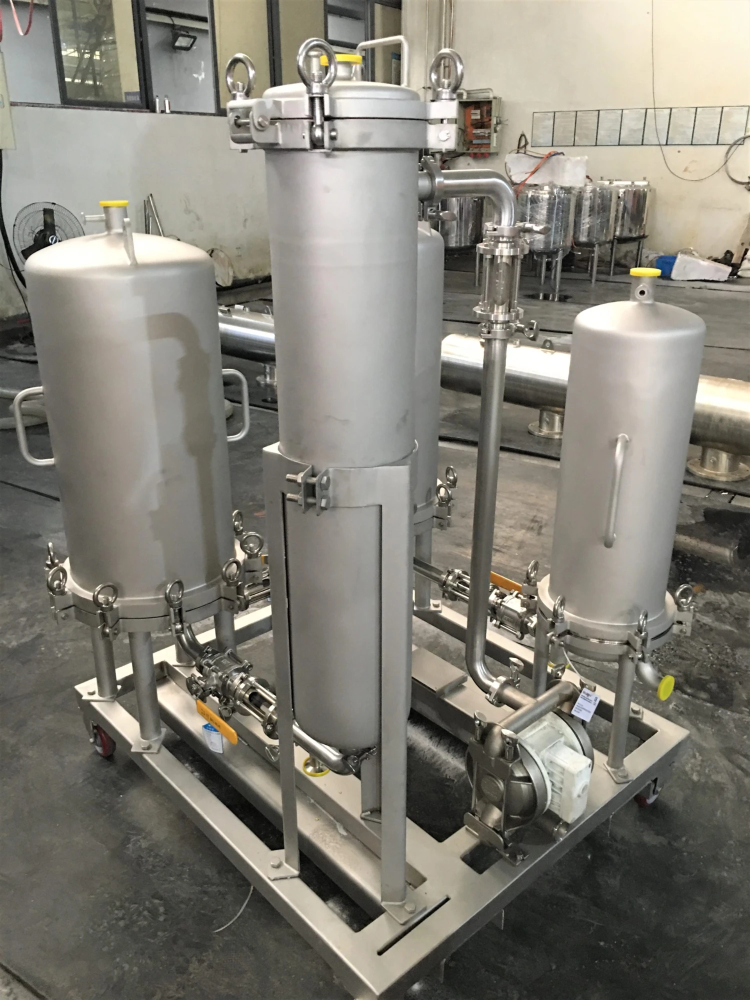
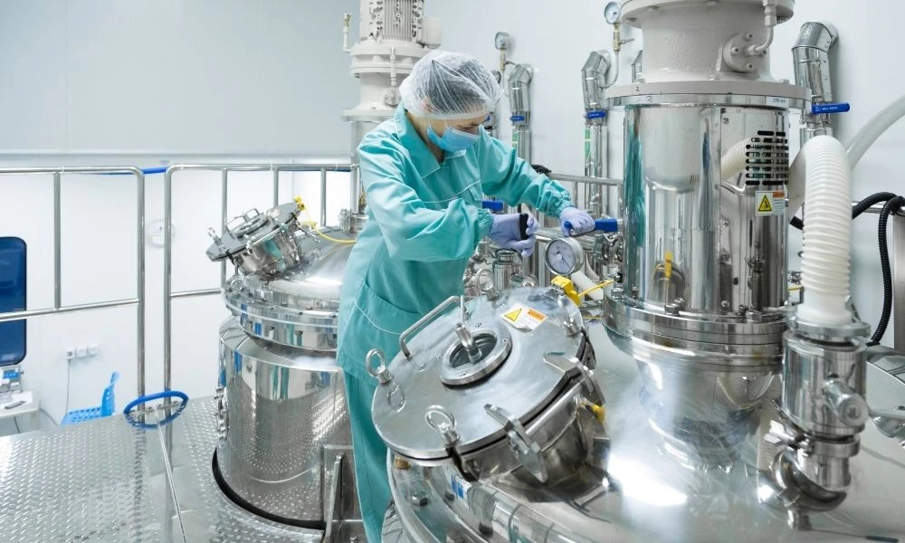
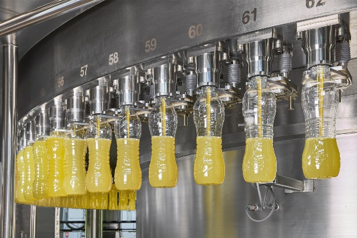

Equipment · Process & Filtration
Overview
Modular process skids and membrane filtration systems — fully piped, wired, and factory-tested on a single SS skid frame for rapid plug-and-play installation.
Our skid-mounted systems cover CIP stations, juice filtration skids, NF/RO membrane systems, and custom utility skids. Every unit ships as a complete, pre-commissioned assembly — reducing site installation time by up to 60%.
Centralised or dedicated clean-in-place skid stations for dairy, food, and beverage processing lines. Automated multi-circuit systems delivering pre-rinse, caustic wash, acid rinse, and final rinse sequences with data logging.

Skid-mounted nanofiltration and reverse osmosis systems for whey demineralisation, water purification, lactose removal, and juice concentration. Spiral-wound or ceramic membrane options.

Compact juice clarification, de-aeration, and dosing skids for beverage lines. Also includes custom utility skids — dosing stations, buffer pH adjustment units, and sampling manifolds — all factory-assembled and tested.
Ready to start?
Share your process duty, flow rate, and P&ID requirements — our engineers will configure the right skid and respond within 24 hours.